SYNSNU — MEDIA För våra samarbetspartners · 2026
Det här är Syns Nu
— byrån era kunder
kommer älska.
En genomgång av vilka vi är, hur vi jobbar och varför restauranger stannar hos oss — så ni kan föra det vidare till era kunder med trygghet.
Det här tar vi
er igenom idag.
Vilka vi är
Sveriges nischbyrå för restauranger — sedan dag ett.
Marknaden vi möter
Restauranger som tappar gäster till osynlighet.
Vår filosofi
Vi mäter framgång i dagskassa, inte visningar.
Vad ni kan erbjuda
Tre pelare som täcker hela behovet.
Priser & paket
Tydlig prislista — lätt att kommunicera.
Resultat & kundcase
Konkreta bevis ni kan visa kunderna.
Samarbetet
Så ser flödet ut — från lead till resultat.
 SYNSNU—MEDIA
SYNSNU—MEDIA
En byrå, byggd helt
kring restauranger.
Syns Nu Media är en svensk byrå som uteslutande jobbar med restauranger. Inga frisörer, inga advokatbyråer — bara kök, servering och gäster. Det är vår nisch, och det är därför era kunder kan lita på oss.
Vi kan branschens marginaler, rusningstider och rytmer — fredagskvällar, lunch, Wolt och Foodora. När ni rekommenderar oss vidare vet ni att kunden landar hos någon som faktiskt förstår deras vardag.
SYNSNU—MEDIA
Det här möter era kunder
varje dag.
Konkurrenterna tar deras gäster
Medan restaurangägaren står i köket investerar grannrestaurangen i sociala medier. Gäster som kunde varit deras hamnar någon annanstans.
Fina videos — ingen awareness
De har redan testat byråer som levererar snygg film utan effekt. Visningar och likes når inte rätt gäster — det är där vi gör skillnad.
Generella byråer utan branschkunskap
De flesta byråer förstår inte restaurangvärlden. Vi gör inget annat — det är därför våra partners syns där rätt gäster faktiskt är.
SYNSNU—MEDIA
Vi mäter räckvidd —
som leder till fler besökare.
Räckvidd som syns
Vi mäter alla siffror från sociala medier och visningar på hemsidan — och följer hur de översätts till fler besökare i restaurangen.
Partnerskap
Långsiktiga relationer där vi växer tillsammans med dig, säsong efter säsong.
Transparens
Tydliga avtal, tydliga priser och inga överraskningar på fakturan.
SYNSNU—MEDIA
Vi jobbar inte som en
vanlig byrå.
Byggt för restauranger.
- Djup förståelse av restaurangbranschen
- Strategier som driver dagskassa
- Tydliga avtal med löpande support & SEO
- Fokus på återkommande, lojala gäster
Byggt för alla — och ingen.
- Svag förståelse för restaurangbranschen
- Fina reklamvideos — ingen effekt i kassan
- Otydliga priser, vaga leveranser
- Mäter visningar istället för omsättning
SYNSNU—MEDIA
Tre pelare som lyfter
din restaurang.
Det här är hela paletten ni kan erbjuda era kunder — från första bilden av maten till strategin som driver beställningarna.
Sociala medier
Innehåll, redigering och distribution. Som bygger awareness och får fler gäster att hitta till er.
Från 7 500 kr/månWebbdesign
Mobilanpassade sidor som höjer varumärket, lyfter awareness och gör det enkelt för gäster att hitta er.
500 kr/månMenyfotografering
Hela menyn fotograferad professionellt — för Qopla, Foodora, Wolt,
5 000 kr · engångskostnadSYNSNU—MEDIASociala medier.
Vår mest sålda tjänst — den som driver flest gäster tillbaka till er.
Vi bygger hela din digitala närvaro.
- Strategi anpassad efter din restaurang
- Månatlig inspelningsdag på plats
- Videoproduktion för TikTok, Reels, Shorts
- Matbilder i hög kvalitet
- Hantering av Instagram, TikTok & Facebook
- Google-optimering och profilhantering
Dokumenterad ökning hos Östermalmsgrillen by Garo sedan partnerskapet inleddes.
SYNSNU—MEDIATre nivåer, en tydlig resa.
Trygg och stabil start utan att påverka din budget negativt. Sociala medier — 3 mån bindning.
För dig som vill synas lite mer.
- 1 inspelning / mån
- 2 videos / mån
- 6 bilder / mån
- Sociala medier-hantering
- Google-optimering
- Hantering av Google-profil
För dig som vill öka omsättning med fler lojala kunder.
- 1 inspelning / mån
- 4 videos / mån
- 4 bilder / mån
- Sociala medier-hantering
- Sociala medier-strategi
- Marknadsföring (ads)
För dig som vill öka omsättningen snabbt med nya kunder.
- 1 inspelning / mån
- 12 videos / mån
- 8 bilder / mån
- Sociala medier-hantering
- Sociala medier-strategi
- Marknadsföring + ad-targeting
Alla priser exkl. moms · Sociala medier 3 mån bindning.
SYNSNU—MEDIAWebbdesign & menyfotografering.
Webbdesign
Hemsidor skräddarsydda för restauranger.
- Mobilanpassad, snabb och SEO-redo
- Integration med Qopla & beställningssystem
- Menyhantering och bildgalleri
- Tydliga CTA för bokning och beställning
Menyfotografering
Hela menyn fotograferad för onlinebeställningar.
- Professionell studiokvalitet på plats
- Hela menyn fotograferad på en dag
- Färdiga bilder för Foodora, Wolt & hemsida
- Konsekvent look som höjer varumärket
SYNSNU—MEDIAKundcase från våra partners.
Klicka på ett case för att läsa hela historien — strategi, leverans, resultat.
House
Soufflé-pannkakor som blev en Stockholmssensation.
Läs casetBurgers
Smashburgare som syns där rätt gäster scrollar.
Läs casetRevolution
Premium-sushi med en närvaro som matchar kvaliteten.
Läs casetLibanesisk matupplevelse — synlig hos rätt målgrupp.
Läs casetSYNSNU—MEDIA
Äkta röster från
riktiga restauranger.
Otroligt bra videos och bilder som dom fixar. Kan rekommendera starkt för dig som behöver hemsida eller någon som kan ta hand om dina sociala medier.
Fantastiskt team bakom företaget. Kreativa idéer, hög kvalitet samt toppen kundbemötande. Skulle gett sex stjärnor om det var möjligt.
Professionella, engagerade och otroligt trevliga. Slutresultatet, både i form av videor och bilder, är helt enkelt enastående.
SYNSNU—MEDIA
Så ser samarbetet
ut i praktiken.
Ni introducerar
Ni tipsar er kund om oss och kopplar ihop oss. Vi tar det därifrån — ni behöver inte sälja själva.
Vi möter kunden
Gratis introduktionsmöte med oss. Behovsanalys, strategi och paketval — utan press.
Onboarding
Avtal skrivs, första inspelningsdagen bokas. Ni får en rapport om att kunden är i hamn.
SYNSNU—MEDIA
Redo att bli partner
med Syns Nu?
Boka ett partnermöte med oss. Vi går igenom upplägg, ersättning och vilka kunder ni har i pipen — så hittar vi en form som passar er.